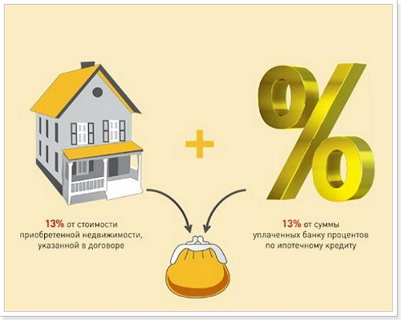

В общей сложности за квартиру и проценты по ипотеке можно вернуть до 650 000 рублей в течение нескольких лет.
Если вы работаете официально и получаете «белую» зарплату, то платите подоходный налог — 13%.
Например, получая официальную зарплату 60 000 рублей, каждый месяц вы выплачиваете налоги на сумму 7 800 рублей. В год это 93 600 рублей. После покупки квартиры эту сумму можно и нужно вернуть! Бегом все за вычетом!!!
Вычет - это круто!
Вычет НЕ предоставляется:
-
При покупке недвижимости у взаимосвязанных лиц.
-
Если человек уже исчерпал свое право имущественного вычета.
Если недвижимость была приобретена в ипотеку какую сумму можно получить:
 Максимально возможная сумма для расчета налогового вычета – 2 млн рублей, а для процентов по ипотеке – 3 млн рублей. Таким образом, до 260 000 рублей можно вернуть из своих налогов при покупке квартиры, а также до 390 000 рублей за выплаченные проценты по ипотеке.
Ежегодно вы можете получить не больше, чем перечислили в бюджет подоходного налога (13% от официальной зарплаты). При этом возвращать налог вы можете в течение нескольких лет до тех пор, пока не вернете всю сумму целиком.
Законодательство не накладывает ограничения на число лет возмещения. Если ипотечный договор подписан на 30 лет, то можно ежегодно оформлять вычет по мере уплаты процентов.
Какие документы нужны:
-
Паспорт
-
Декларация 3-НДФЛ
-
Заявление на возврат налога
-
Документы, подтверждающие ваши расходы
-
Документы, подтверждающие уплаченный подоходный налог (справка 2-НДФЛ)